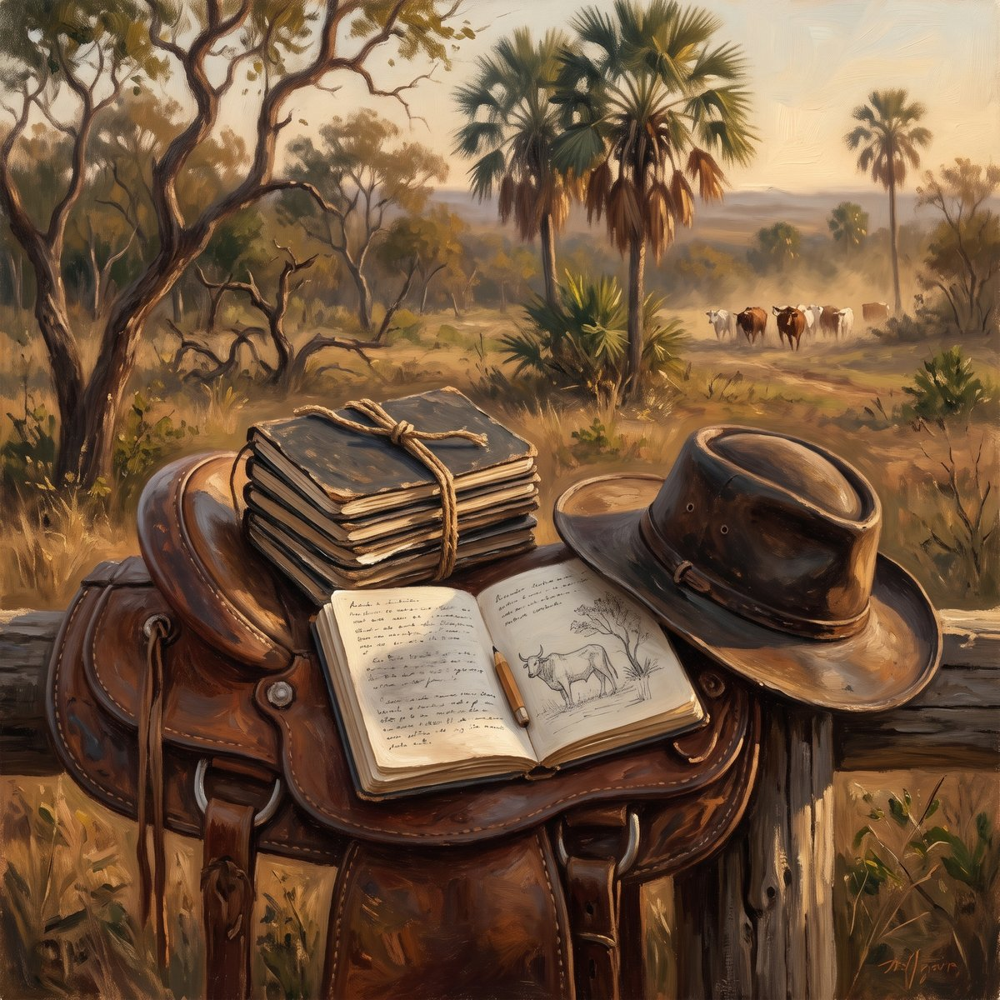

IFMG campus Ouro Preto - Coordenadoria da Área de Física (CODAFIS) - Núcleo de Inovação e Desenvolvimento de Experimentos Científicos (NIDEC) · LME · T0A · Primeira edição · 2026
▼ role para ler
♪ Leia ouvindo — clique aqui ou na aba MÚSICA e conheça a recomendação de Piazzi.
“O homem, ministro e intérprete da natureza, faz e entende tanto quanto constata, pela observação dos fatos ou pelo trabalho da mente, sobre a ordem da natureza; não sabe nem pode mais.”
— Francis Bacon (1561–1626)
Francis Bacon (Londres, 1561 — Londres, 1626). Filósofo e estadista inglês. A frase é o primeiro aforismo do Novum Organum (1620), o livro em que ele propõe que o conhecimento da natureza se construa a partir do que se observa e se registra, e não do que se supõe. Numa disciplina em que você vai pôr à prova os modelos que já estudou, ela diz o limite de todo o trabalho: o modelo só vale até onde o dado constatado o sustenta.
Figura 2 — A frase de Bacon escrita na página de um caderno de laboratório; na página ao lado, ainda em branco, o registro que vai nascer na bancada.
Ato I — O Gancho
Há um ano você entrou neste laboratório para aprender a medir. Voltou sabendo Mecânica. Esta noite a pergunta muda: não mais quanto deu?, mas o modelo que você estudou aguenta o que a bancada vai dizer? E, se não aguentar, você vai saber dizer por quê?
Figura 3 — A mesma bancada, a mesma régua: o espaço você já conhece. O que muda a partir de agora é o que você pergunta a ela.
O Laboratório de Mecânica (LME) tem dois pré-requisitos, e os dois contam. Da Introdução ao Laboratório (ILB) você traz o ofício de medir: ler a menor divisão, estimar a incerteza, montar a tabela, traçar o gráfico. De Mecânica I você traz os modelos: as leis de Newton, as forças peso, elástica e de atrito. Até aqui eles andaram separados. Nesta disciplina eles se encontram — e o encontro nem sempre é pacífico.
Na ILB o experimento era veículo: media-se para aprender a medir. Aqui ele é objeto: mede-se para pôr o modelo à prova. Antes de cada coleta você vai escrever o que a Mecânica prevê; depois dela, vai decidir, com base na incerteza, se o dado confirma a previsão — ou qual hipótese do modelo falhou. Errar a previsão não é fracasso. Deixar de decidir, é.
E há a dobra de toda licenciatura. Um dia você vai estar do outro lado desta bancada, diante de uma turma de ensino médio, e a pergunta que vai importar não é só como se mede, mas como eu mostro a essa turma que um modelo pode falhar. Sofia e Pedro, quando aparecerem nas próximas trilhas, são essa turma imaginada.
Este texto responde cinco perguntas. São as mesmas que você fez na primeira noite da ILB — e é de propósito. Os documentos agora são outros, as trilhas são outras e o critério da nota é outro; a forma da pergunta continua servindo. Isso também é matéria de licenciatura: um bom desenho de aula atravessa disciplinas, e o que muda de uma para outra é a resposta.
O que os documentos oficiais revelam?
O que são as Trilhas de Aprendizagem, quantas paradas estratégicas e quantos Objetos de Aprendizagem cada parada contém?
Existe uma sequência para estudar que funciona bem, ou cada estudante escolhe por onde começar e como caminhar?
Como funciona o sistema de avaliação?
Como posso carregar os materiais e o método de estudo com segurança na minha mão?
Explore este lugar no Google Maps
IFMG — Campus Ouro Preto, Pavilhão de Física
Você já atravessou esta porta. O Pavilhão de Física, inaugurado em 1985, faz 41 anos em 2026, e o Laboratório de Mecânica é o mesmo em que você cursou a Introdução ao Laboratório — a LME ocupa a bancada logo depois dela, na mesma terça-feira. Por isso esta volta começa pelo prédio: o lugar é conhecido, a pergunta é nova.
Ele liga você a uma tradição que começou na Praça Tiradentes. Em 1876, Claude-Henri Gorceix fundou a Escola de Minas e trouxe para Ouro Preto uma ciência que confrontava a teoria com o que o terreno mostrava. São 150 anos de prever e conferir — e é exatamente isso que o semestre vai lhe pedir.
Passar de novo pela porta foi o gancho. Agora vêm as cinco respostas, na ordem das perguntas. Nenhuma delas pede uma medição ainda: a primeira previsão escrita e a primeira coleta são da T01, em 13/10. O que se instala aqui é o comportamento que o semestre inteiro vai supor pronto.
Tópico 1 — O que os documentos oficiais revelam?
Toda disciplina existe primeiro no papel, e esta tem uma particularidade: um dos seus documentos está mudando enquanto você a cursa. Vale ler os quatro com atenção — estão no site da disciplina, na aba Documentos.
O Projeto Pedagógico do Curso (PPC) e a matriz curricular. O PPC descreve o que a Licenciatura em Física do IFMG-OP se compromete a formar: um professor de Física para a educação básica. Na matriz, o Laboratório de Mecânica está no 4.o período, com 30 horas, todas de prática de laboratório, e tem dois pré-requisitos: a Introdução ao Laboratório e Mecânica I. Os dois juntos dizem o que se espera de quem chega aqui: saber medir e saber o modelo. Guia de leitura e PDF integral do PPC.
A ementa — a vigente e a proposta. A ementa em vigor no PPC tem duas frases: “Realização de experimentos em congruência com as disciplinas Mecânica I e II. Análise e apresentação de resultados.” Uma proposta de nova ementa está em análise pela Coordenação do Curso. Ela preserva esse núcleo e nomeia o que ele deixava implícito: o modelo teórico confrontado com o dado experimental, a propagação de incertezas, o ajuste linear e não linear de curvas, e os experimentos — leis de Newton, forças, empuxo e arrasto, plano inclinado, colisões, hidrostática. Ler as duas lado a lado é o primeiro exercício desta trilha. A ementa vigente e a proposta.
O Plano de Ensino 2026.2. Desdobra a ementa em 3 temas, 13 trilhas e 15 encontros, com datas, pesos e prazos. Ele explica também uma escolha que pode surpreender: o Tema 1 retoma o tratamento de dados antes da Mecânica. Parte da turma cursou a Introdução ao Laboratório antes da sua reformulação, quando propagação de incertezas e ajuste de curvas não eram tratados de modo sistemático — e sem esse instrumental não há confronto possível entre modelo e dado. Não é repetir a ILB; é garantir a todos o mesmo ponto de partida. O Plano de Ensino.
O Regulamento de Ensino (Resolução n.o 01/2026 do IFMG). Vale para todas as disciplinas e fixa os números que não se negociam: frequência mínima de 75% das horas do componente curricular, rendimento mínimo de 60% para aprovação e nenhum instrumento de avaliação acima de 40%.
Eixo Didático — a dobra da licenciatura
Comparar uma ementa vigente com uma proposta é o que um professor faz quando a escola reforma o currículo: descobrir o que a redação nova passa a obrigar e o que ela apenas torna explícito. Você vai viver isso em alguma escola — e está vivendo agora, como estudante, na disciplina que cursa.
Eixo Histórico-Cultural — Ouro Preto
A Escola de Minas de Ouro Preto nasceu, em 1876, com um currículo escrito para formar quem soubesse ler o Quadrilátero Ferrífero com instrumento e cálculo. O documento oficial como ferramenta de formação tem, nesta cidade, 150 anos de história.
Eixo Metrológico — a ciência da medida
A proposta de ementa troca “análise de resultados” por propagação de incertezas e ajuste linear e não linear. O contrato da disciplina passa a ser metrológico por escrito: o que se cobra não é um número certo, é um número com a sua incerteza e um modelo julgado por ela.
Destino do modelo — a mineração
Na mina, o documento que obriga quem entra é a Norma Regulamentadora n.o 22 (NR-22), de segurança e saúde ocupacional na mineração. Como a ementa, ela diz por escrito o que se exige antes de qualquer trabalho começar — e é o tipo de exemplo que você pode levar a uma turma de uma escola da região.
Tópico 2 — O que são as Trilhas de Aprendizagem, quantas paradas estratégicas e quantos Objetos de Aprendizagem cada parada contém?
A disciplina não é dada em aulas soltas: é dada em trilhas. São treze, em três temas, ao longo de quinze encontros. O Tema 0 — Boas-vindas tem esta trilha e a T0B, sobre unidades e ordens de grandeza. O Tema 1 — Entendendo as medidas vai da T01 à T05, um capítulo de Lima e Zappa por trilha, do algarismo significativo ao ajuste não linear. O Tema 2 — Brincando com Forças e Movimentos vai da T06 à T11, na sequência de Mecânica I e II: leis de Newton, forças, atrito e arrasto, plano inclinado, colisões, pressão e empuxo. Dois encontros de fechamento devolvem os relatórios de cada tema.
As três paradas estratégicas. Cada trilha tem sempre as mesmas três, e elas não trocam de ordem:
Pré-Lab — 20 minutos, em casa, antes do encontro. Você chega com a previsão do modelo escrita e sabendo o que vai medir.
Lab — 100 minutos, na bancada, terça-feira, das 20:50 às 22:30. A medição acontece aqui, e só aqui.
Pós-Lab — 40 minutos, em casa, depois do encontro. Tratamento, ajuste e o confronto com o modelo.
Os Objetos de Aprendizagem (OAs) de cada parada. Um Objeto de Aprendizagem é uma peça de material com função única. A disciplina tem dezesseis, os mesmos da Introdução ao Laboratório, distribuídos pelas três paradas:
Pré-Lab: o Ponto de Partida (PP), o Resumo em Áudio (MD), o Texto Temático (TT), as Simulações (SM) e o Testinho (TN). De apoio, fora do caminho numerado: os Cartões Didáticos (CD), o Mapa Conceitual (MC), o Inventário de Equipamento (IE) e o Checklist de Segurança (CS).
Lab: o Roteiro de Bancada (RB), a Apresentação do Lab (AP), os Infográficos de Bancada (IG) e a Provinha (PR).
Pós-Lab: o Relatório Mínimo (RM) e o Relatório Completo (RC). De apoio, o Desafio Pedagógico (DX), opcional.
Esta trilha é a exceção. A T0A não mede nada, e por isso entrega cinco dos dezesseis: no Pré-Lab, o Resumo em Áudio, este Texto Temático e os Cartões Didáticos; no Lab, o Roteiro de Bancada de reconhecimento — com o Inventário de Equipamento e o Checklist de Segurança dentro dele — e a Apresentação do Lab. Sem dado coletado, não há Pós-Lab. Os outros onze entram a partir da T01, e você os encontra, na ordem, na aba Método do site.
O que se repete em toda trilha de bancada — e o que muda em relação à ILB. Na Introdução ao Laboratório, o percurso repetido tinha três etapas: avaliar e expressar a medição com sua incerteza, apresentar tabelas e gráficos, ajustar uma curva. Essas três etapas não somem. Elas passam a ser o instrumental de uma sequência maior, que é a desta disciplina:
Previsão do modelo — o que a Mecânica diz que deve acontecer, escrito antes da coleta.
Medição com incerteza — tabelas e gráficos na nomenclatura da bibliografia básica.
Ajuste e decisão — o modelo é compatível com os dados, dentro da incerteza? Se não, qual hipótese falhou?
Figura 4 — As três etapas que a Introdução ao Laboratório instalou — medição e incerteza, tabela e gráfico, curva ajustada — são, aqui, o instrumental da medição e da decisão sobre o modelo.
Um exemplo, só contado. Mecânica I diz que um carrinho puxado por um peso que cai sobre uma roldana deve ter aceleração constante, com valor que se calcula pelas massas. Se a reta de velocidade contra tempo sair com inclinação menor do que a prevista, e a diferença for maior que a incerteza, o modelo — do jeito que foi escrito — não explica o dado. A pergunta seguinte é a que interessa: que hipótese foi deixada de fora? Quase sempre, o atrito. É assim que a T06 vai trabalhar.
Eixo Didático — a dobra da licenciatura
A sequência previsão, medição e decisão cabe numa sala sem laboratório: basta a turma escrever a previsão antes de ver o vídeo do experimento ou de rodar a simulação. O equipamento é o que menos viaja; o hábito de prever antes de olhar viaja inteiro.
Eixo Histórico-Cultural — Ouro Preto
A mineração colonial desta região funcionava pela prática de quem já sabia: o mineiro experiente dizia onde estava o ouro, e o acerto confirmava a autoridade. A Escola de Minas trouxe outro hábito — o de prever com um modelo, conferir no terreno e revisar o modelo quando o terreno discordava.
Eixo Metrológico — a ciência da medida
Dizer que um modelo é “compatível dentro da incerteza” só tem sentido se a incerteza foi estimada. É por isso que o Tema 1 vem antes do Tema 2: sem o instrumental de medição, a decisão sobre o modelo vira opinião.
Destino do modelo — a mineração
Uma usina de beneficiamento também prevê e confere. A vazão que a correia transportadora deveria entregar é comparada com a massa pesada na balança da correia; se a diferença passa da incerteza da balança, alguma hipótese do processo falhou — e alguém precisa dizer qual.
Tópico 3 — Existe uma sequência para estudar que funciona bem, ou cada estudante escolhe por onde começar e como caminhar?
A resposta honesta é a mesma da ILB, com um passo a mais: a sequência é uma só, e é curta — mas o ritmo é seu. Você escolhe a hora e o lugar; não escolhe a ordem das paradas, porque cada uma prepara a seguinte. E, nesta disciplina, nenhuma delas funciona sem a previsão escrita.
Antes da aula (Pré-Lab, 20 min). Ouça o Resumo em Áudio (MD), leia o Texto Temático e escreva o que o modelo prevê para o experimento da trilha. Confira o Inventário de Equipamento (IE) e o Checklist de Segurança (CS). Quando a trilha indicar, prepare a montagem num laboratório virtual — o da Universidade Federal do Ceará, as animações de V. Vaščák ou as simulações PhET. A previsão não precisa estar certa: ela precisa existir. Quem chega sem ela não tem o que testar.
Figura 5 — O extintor de incêndio e o kit de primeiros socorros ficam na sala de permanência dos professores — fora do laboratório, e sempre no mesmo lugar.
Durante a aula — segurança primeiro. Você já conhece as regras da ILB, e elas continuam valendo: a saída de emergência, o extintor e o kit de primeiros socorros na sala de permanência dos professores, o calçado fechado, cada instrumento devolvido ao seu lugar. A Mecânica acrescenta riscos que a ILB quase não tinha: massas suspensas em roldanas, molas tensionadas, carrinhos correndo em trilhos, colisões, fluido sobre a bancada. Por isso o Equipamento de Proteção Individual (EPI) cresce com as trilhas — óculos de proteção onde houver mola, lançamento ou colisão, cabelo preso e nada pendurado perto de roldanas e trilhos. Ao final deste bloco, a turma propõe e o professor consolida as regras de uso do laboratório. Você assina o termo de segurança no Roteiro de Bancada desta trilha: é pré-requisito para entrar na bancada na T01. Quem faltar hoje assina antes do encontro de 13/10, com a monitoria.
Figura 6 — Uma escala graduada em detalhe — a menor divisão é o que separa o que o instrumento sabe dizer do que ele não sabe, e é ela que decide se o modelo pode ser julgado.
Durante a aula — o acervo compartilhado. O Laboratório de Mecânica ocupa a bancada logo depois da Introdução ao Laboratório, na mesma noite. Isso tem duas consequências. A primeira: réguas, paquímetros, balanças e cronômetros são velhos conhecidos, e você os revê só para conferir a menor divisão. A segunda: entram instrumentos novos, próprios da Mecânica — trilho com sensores fotoelétricos, máquina de Atwood, dinamômetros e molas, plano inclinado com transferidor, manômetro. A lista é proposta e é conferida no acervo antes de cada trilha, porque vale uma regra sem exceção: sem inventário, sem aula. E, como o laboratório é de duas disciplinas, toda montagem da LME é conferida no início do encontro e desmontada ao final.
Figura 7 — A mão escrevendo a primeira entrada do Roteiro de Bancada, de perto — é aqui que o dado nasce, e é aqui que a previsão fica escrita antes dele.
Durante a aula — o registro, onde o dado nasce. No Roteiro de Bancada (RB) a ordem é fixa: a previsão vem antes, datada; o dado bruto vem durante, com as condições em que foi obtido; a decisão vem depois. E a regra que você já conhece ganha peso novo: o dado bruto não se apaga e não se corrige. Mudou de ideia? Anota-se ao lado, sem rasurar. Na ILB, isso protegia a medida; aqui, protege o julgamento. Um dado corrigido para caber no modelo não testa o modelo — confirma a sua vontade. O registro precisa ser tal que outra pessoa reproduza o procedimento sem você presente.
Depois da aula (Pós-Lab, 40 min). Tratamento dos dados, ajuste e confronto com o modelo, em dois relatórios: o Relatório Mínimo (RM), de uma página, em até 1 dia; e o Relatório Completo (RC), em até 6 dias. Nesta trilha não há nenhum dos dois — sem dado coletado, não há o que relatar.
Eixo Didático — a dobra da licenciatura
Que risco da Mecânica se leva a uma escola, e com que cuidado? Uma massa pendurada num barbante e um carrinho de brinquedo numa rampa de papelão já bastam para pôr a segunda lei de Newton à prova numa sala comum — desde que a turma escreva a previsão antes e ninguém fique embaixo da massa.
Eixo Histórico-Cultural — Ouro Preto
Antes do Sistema Internacional de Unidades, o ouro desta região era pesado em oitavas e quilates. Parte dos instrumentos de quem pesava, ensaiava e ensinava está no Museu de Ciência e Técnica da Escola de Minas, na Praça Tiradentes — acervo que já foi de bancada, como o seu.
Eixo Metrológico — a ciência da medida
Um instrumento sem manutenção perde a rastreabilidade da sua medida, e um laboratório compartilhado desgasta mais depressa. Conferir o inventário no início do encontro é segurança física e é também segurança metrológica: o modelo só pode ser julgado por um instrumento em que se confia.
Destino do modelo — a mineração
A NR-22 e a segurança da mina seguem a mesma lógica de risco da bancada: identificar o perigo antes de começar, registrar as condições do trabalho e nunca alterar o registro depois de um incidente. O checklist que você assina hoje é, em pequena escala, o mesmo gesto.
Tópico 4 — Como funciona o sistema de avaliação?
A avaliação desta disciplina é processual: acompanha as três paradas, e os pesos espelham a estrutura da trilha. Os números são os mesmos da Introdução ao Laboratório. O que muda é o critério de uma das partes — e é a parte que mais importa.
Os quatro instrumentos e seus pesos (válidos das trilhas T01 a T11):
Pré-Lab — 20%. A ficha de preparação do Texto Temático, com a previsão do modelo e a conferência do Inventário de Equipamento e do Checklist de Segurança. Entregue no início do encontro, avalia preparo, não acerto da previsão.
Lab — 40%. O Roteiro de Bancada preenchido, com os dados brutos e o registro do procedimento. Conduta de segurança, montagem, registro completo, reprodutibilidade.
Pós-Lab: Relatório Mínimo (RM) — 15%. Uma página, digital, em até 1 dia após a prática. Dado bruto completo, cálculo visível e resultado expresso como ( valor ± incerteza ) unidade.
Pós-Lab: Relatório Completo (RC) — 25%. Digital, em até 6 dias. Incertezas e sua propagação, tabelas e gráficos, ajuste linear ou não linear e — o critério novo — a decisão sobre o modelo: o ajuste é compatível com a previsão teórica dentro da incerteza? Se não, qual hipótese do modelo falhou?
Errar a previsão não tira nota; deixar de decidir, sim. Um relatório que chega a um valor bem medido e para ali está incompleto nesta disciplina. Um relatório que conclui, com a incerteza na mão, que o modelo sem atrito não explica o dado — e diz por quê — está completo, mesmo que a previsão tenha falhado.
Quando cada coisa acontece. A ficha e o Roteiro de Bancada são devolvidos no próprio encontro; o Relatório Mínimo, no encontro seguinte; o Relatório Completo, nos fechamentos de cada tema — 17/11, para o Tema 1, e 26/01/2027, para o Tema 2 —, com a possibilidade de reapresentar a análise corrigida até o fechamento seguinte.
Esta trilha é a exceção. A T0A e a T0B não valem nota. Na T0A cobra-se presença e o termo de segurança assinado, pré-requisito para a bancada da T01.
Aprovação. Frequência mínima de 75% e rendimento mínimo de 60%, pelo Regulamento de Ensino. Quem não atingir os 60%, com a frequência mínima, faz o exame final em 24 e 25/02/2027.
A estratégia de estudo que decorre disso. Quem prevê antes, pelos 20%, sabe o que procurar na bancada, onde estão os 40%. Quem registra bem escreve o Relatório Mínimo no mesmo dia, enquanto o dado está quente — e é para isso que o RM existe: impedir o dado de esfriar. Feito isso, o Relatório Completo dos 25% vira decisão, e não reconstrução de uma noite que você já não lembra.
Eixo Didático — a dobra da licenciatura
Não punir a previsão errada é uma decisão didática, e não uma gentileza. Uma turma que perde nota por errar a previsão aprende a prever o que já sabe, e o experimento deixa de testar qualquer coisa. Você vai tomar essa decisão, um dia, na sua própria turma.
Eixo Histórico-Cultural — Ouro Preto
Os engenheiros formados pela Escola de Minas eram avaliados por memoriais de campo — relatórios em que o terreno tinha a última palavra sobre a teoria. Avaliar por relatório é a forma como a comunidade científica sempre julgou o trabalho experimental.
Eixo Metrológico — a ciência da medida
O critério do Relatório Completo é, literalmente, o critério metrológico de compatibilidade: dois valores só se dizem iguais, ou diferentes, quando se comparam as suas incertezas. Sem incerteza declarada, não há decisão a avaliar.
Destino do modelo — a mineração
Um laudo técnico de mina não é aprovado por ter acertado: é aprovado por declarar a incerteza das medidas e sustentar a decisão com o dado. É a mesma exigência do seu Relatório Completo.
Tópico 5 — Como posso carregar os materiais e o método de estudo com segurança na minha mão?
Nenhum material desta disciplina depende de você estar no campus. Tudo o que você precisa cabe no telefone — e, na LME, a mão carrega também um laboratório inteiro, em simulação.
O site da disciplina.nidecop-jafb.github.io/lme-oa é a porta de entrada: os materiais de todas as trilhas, a aba Documentos, a entrega dos relatórios e o canal da monitoria. Abre no celular e pode ser instalado como atalho na tela inicial.
O Resumo em Áudio (MD). De três a cinco minutos, um por trilha. Monta o esqueleto do assunto antes da leitura, e cabe no trajeto até o campus.
Os Cartões Didáticos (CD). Revisão ativa do vocabulário da disciplina e dos instrumentos do acervo: você responde antes de virar o cartão.
Este Texto Temático, na tela. A versão digital tem sumário, índice de figuras, tema claro ou escuro e a marca de quanto você já leu. A versão impressa sai na mesma versão, quando for publicada: se uma mudar, a outra muda junto.
Os laboratórios virtuais. O Laboratório Virtual de Física da Universidade Federal do Ceará, as animações de V. Vaščák e as simulações PhET, da University of Colorado Boulder, são gratuitos e não pedem cadastro. Você os usa no Pré-Lab, para preparar a montagem, e no Pós-Lab, para repetir ou estender a coleta. E eles servem a você duas vezes: como estudante agora, e como professor de uma escola sem laboratório depois.
A planilha e o ajuste assistido por inteligência artificial. A partir da T01, você pode usar uma ferramenta de inteligência artificial para ajustar a curva aos seus dados, com duas condições que não se negociam. O resultado é sempre conferido por você: coerência dimensional, ordem de grandeza, resíduos — e se o parâmetro ajustado tem o significado físico que o modelo diz que ele tem. E o uso é declarado no relatório, com a indicação do que foi conferido. Um ajuste que chega pronto é uma hipótese, não uma decisão.
A monitoria. Atendimento para tratamento de dados, gráficos e relatório, com canal divulgado no site desde esta trilha. É também com a monitoria que se repõe a coleta de um encontro de bancada perdido por motivo justificado.
Eixo Didático — a dobra da licenciatura
Laboratórios virtuais, áudio e cartões são recursos que você pode reproduzir numa escola pública sem laboratório. Olhe para eles também como quem vai usá-los, um dia, para mostrar a uma turma que um modelo pode falhar: numa simulação, basta ligar o atrito.
Eixo Histórico-Cultural — Ouro Preto
Levar o material no bolso inverte a lógica da formação técnica de outrora, em que o acesso ao texto e ao instrumento ficava trancado na biblioteca e no gabinete da escola.
Eixo Metrológico — a ciência da medida
A conferência exigida sobre o ajuste da inteligência artificial é o mesmo crivo que a Metrologia aplica a qualquer resultado. Delegar o cálculo é permitido; delegar o julgamento sobre o modelo, não.
Destino do modelo — a mineração
O monitoramento de uma barragem de rejeitos compara continuamente a leitura dos instrumentos com o que o modelo da estrutura prevê. O software sinaliza a discrepância; quem decide se ela é um alerta é a pessoa que confere — exatamente a divisão de trabalho que se pede de você diante do ajuste pronto.
Ato III — O Fechamento
Você sai deste primeiro encontro com três coisas: o termo de segurança assinado, o Roteiro de Bancada com a primeira entrada — a regra de uso que você propôs e os instrumentos novos do acervo, cada um com a sua menor divisão ao lado — e uma pergunta para a T01: que previsão eu vou levar escrita?
Figura 8 — O corredor do Pavilhão, no fim da aula — quem sai carrega um termo assinado e uma previsão por escrever.
E sai com as cinco respostas: o que os documentos obrigam, e o que a proposta de ementa passa a obrigar; como a disciplina é feita, e por que a sequência começa no modelo; como se estuda nela; como ela avalia, e por que decidir vale mais do que acertar; e como ela cabe na sua mão. Se em algum momento do semestre você não souber o que fazer em seguida, a resposta provavelmente está numa dessas cinco — volte a este texto antes de perguntar.
Na próxima terça-feira, a T0B trata das unidades e das ordens de grandeza. Repare que ela já é uma forma de previsão: estimar, antes de medir, o tamanho do que vai aparecer.
Ciência e Arte
Cadernetas de viagem:A Boiada, 1952 — João Guimarães Rosa (1908–1967)
Em 1952, Guimarães Rosa acompanhou uma boiada pelo sertão de Minas Gerais, a cavalo, junto com os vaqueiros, por cerca de 220 quilômetros. Levava cadernetas presas por um cordão ao botão da camisa, e foi enchendo sete delas: nomes de plantas e de bichos, falas dos vaqueiros, a cor do céu, o jeito de tocar o gado. As cadernetas estão hoje no Instituto de Estudos Brasileiros da Universidade de São Paulo, e foram publicadas em fac-símile com o título A Boiada. Só anos depois veio o Grande Sertão: Veredas.
A ordem é o que interessa aqui. O romancista não escreveu o sertão que imaginava para depois conferi-lo: anotou o sertão que via, e só então escreveu. A ficção veio depois do registro, e não o substituiu. É o gesto desta trilha — o dado nasce no registro, e o registro vem antes da interpretação.

Figura 9 — As sete cadernetas de Guimarães Rosa, presas ao botão da camisa — o sertão anotado antes de virar romance.
Na Mecânica há uma dobra a mais. Aqui a previsão também se anota antes, e por uma razão simples: se ela ficar só na cabeça, a memória a ajusta ao dado, e o modelo nunca perde. Anotar antes é aceitar, por escrito, que o dado pode desmentir a previsão. E há uma consequência que é conteúdo de formação: ensinar uma turma a anotar antes de concluir é ensiná-la a aceitar que o dado pode desmentir qualquer previsão — inclusive a do professor.
Sete cadernetas presas ao botão da camisa: 220 km de sertão mineiro anotados em 1952, antes do Grande Sertão.
— A Boiada, Guimarães Rosa, 1952
João Guimarães Rosa (Cordisburgo, 1908 — Rio de Janeiro, 1967). Médico, diplomata e escritor mineiro. A frase acima não é dele: é a legenda da obra, e por isso entra sem aspas e assinada pela obra, não pelo autor.
Bacon viu que só se entende o que se constata; Marie Curie constatou e anotou, e o caderno guarda até hoje a radiação da bancada; Guimarães Rosa encheu sete cadernetas no sertão antes de escrever uma linha do romance. Três cérebros, o mesmo gesto.
Referências — Bibliografia Básica
LIMA, C. R. A.; ZAPPA, F. Análise de dados para laboratório de física. Juiz de Fora: UFJF, 2014. 57 p. Disponível em: https://www2.ufjf.br/carlos_lima/wp-content/uploads/sites/520/2019/01/analisedados.pdf. Acesso em: 13 set. 2026.
CAMPOS, A. A.; ALVES, E. S.; SPEZIALI, N. L. Física experimental básica na universidade. 2. ed. Belo Horizonte: Editora UFMG, 2008.
SANTORO, A. et al. Estimativas e erros em experimentos de física. 2. ed. Rio de Janeiro: EdUERJ, 2013.
Referências — Bibliografia Complementar
VUOLO, J. H. Fundamentos da teoria de erros. 2. ed. São Paulo: Edgard Blücher, 1996.
UNIVERSIDADE FEDERAL DO CEARÁ. Laboratório virtual de física: mecânica. Fortaleza: UFC, 2020. Disponível em: https://www.laboratoriovirtual.fisica.ufc.br/. Acesso em: 13 set. 2026.
VAŠČÁK, V. Physics at school: I. Mechanics. Morávia: Vladimír Vaščák, [20--]. Disponível em: https://www.vascak.cz/?id=1&language=it#kapitola3. Acesso em: 13 set. 2026.
UNIVERSITY OF COLORADO BOULDER. PhET Interactive Simulations. Boulder: University of Colorado Boulder, 2002-. Disponível em: https://phet.colorado.edu/pt_BR/. Acesso em: 13 set. 2026.
Epígrafes desta trilha
BACON, Francis. Novum Organum. Londres, 1620. Livro I, aforismo 1. Tradução brasileira (coleção Os Pensadores) a fixar.
CURIE, Marie; CURIE, Pierre. Cadernos de laboratório, 1899–1902. Paris: Bibliothèque nationale de France. (usada no Roteiro de Bancada desta trilha)
ROSA, João Guimarães. A Boiada. Rio de Janeiro: Nova Fronteira, 2011. Edição fac-similar.
Declaração de autoria
Estas Trilhas de Aprendizagem são concebidas, dirigidas e revisadas por uma equipe humana — autor, colaborador, monitores e a equipe do Núcleo de Inovação e Desenvolvimento de Experimentos Científicos (NIDEC) e da Coordenadoria da Área de Física (CODAFIS).
A inteligência artificial entra no processo como ferramenta, nunca como autora: é usada sob curadoria humana, com princípios claros, diretrizes pedagógicas explícitas e honestidade intelectual.
Assim, declaramos abertamente o uso de IA como assistente de redação e diagramação de todos os Objetos de Aprendizagem (Claude Opus 5 e Claude Cowork, Anthropic, 2026; Gemini Notebook, Google, 2026), do mesmo modo que se declara o uso de qualquer ferramenta de autoria.
Terminamos por aqui, um abraço, e até o próximo encontro.